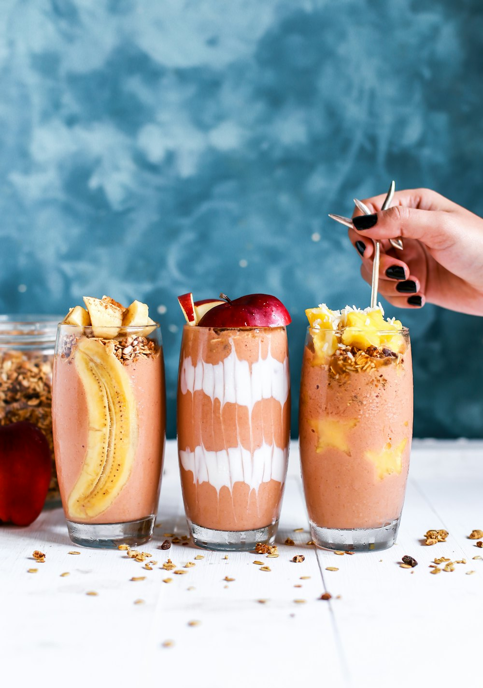
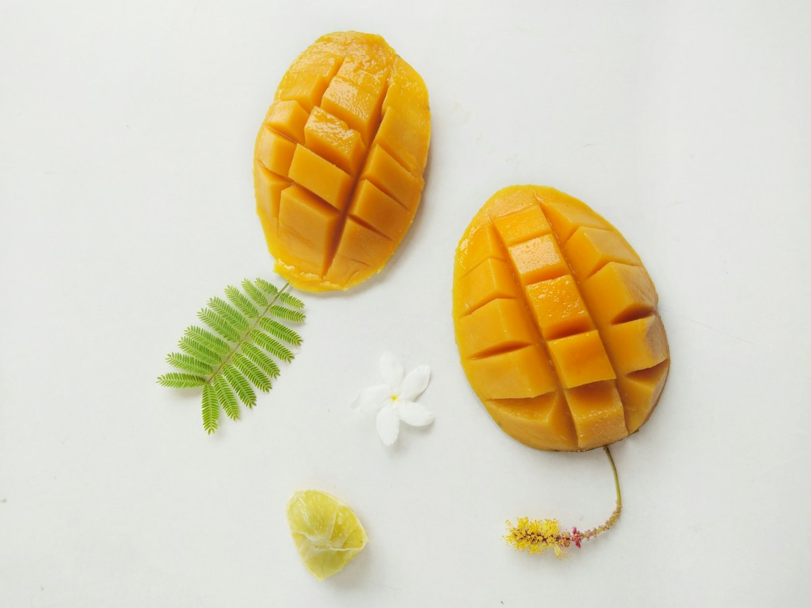
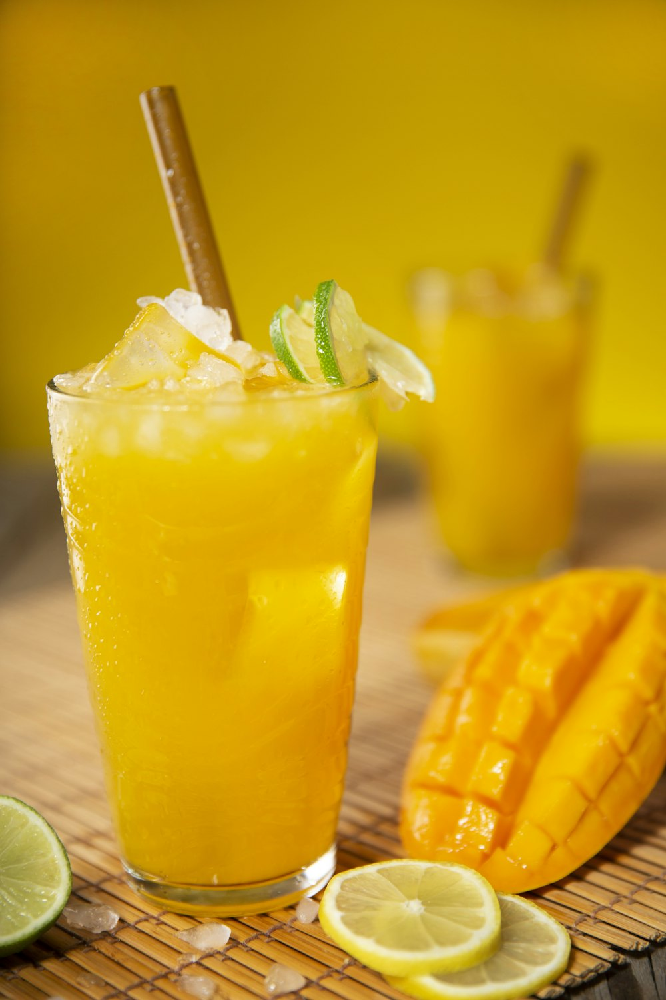
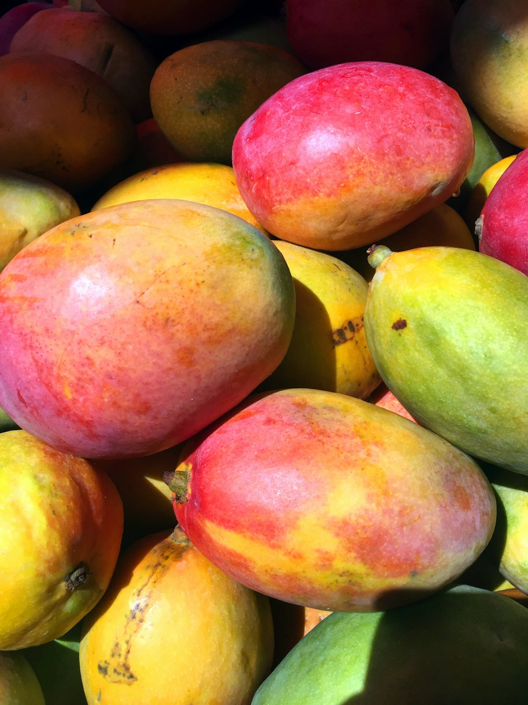

Pink Tropics bowl
Blend a pack of Pink Tropics with a little yoghurt until thick enough to hold a spoon. Top with sliced banana, toasted coconut and seeds.
New range · Frozen tropical fruit
A proposed range of frozen tropical fruit inspired by Vietnam’s orchards and food traditions: single fruits for everyday cooking, and pre-portioned blends for smoothies, bowls and desserts.

01 · The range
Provisional The range below is a proposal. Fruits, blends and formats are still being confirmed.
Photography to come
Deep magenta flesh flecked with tiny black seeds, and a gentle, mild sweetness. It brings colour more than sharpness.
Use it for
Photography to come
Clear, jelly-like cubes with a soft bite and a very mild flavour. They add texture rather than sweetness.
Use it for
Photography to come
Soft, creamy white flesh with a bright sweet-and-sour flavour. No seeds to pick out, so it goes straight into the blender.
Use it for
Photography to come
Ripe golden mango with a little tang to balance the sweetness. The backbone of most blends.
Use it for
Photography to come
Soft, mellow orange flesh with a honeyed sweetness. It blends silky-smooth.
Use it for
Tasting notes describe each fruit in general. They are not test results for a finished product.
Concept Blend names and combinations are working concepts, not final products.
01Concept
In the blend
Magenta and bright: sweet mango, mild dragon fruit and a sour lift from soursop.
Use it for
02Concept
In the blend
Golden, creamy and mellow, with soursop keeping it fresh.
Use it for
03Concept
In the blend
Light and juicy, with aloe vera cubes for a soft, jelly-like bite.
Use it for
02 · Integrity & transparency
Traceability starts with telling the truth about where we are. This is a brand in development, so here is what is settled, what is still being checked and what we intend to publish.
No supplier, farm, origin detail, certification, lab result or processing method is claimed on this page.
03 · Farmers & community
Good fruit depends on the people who know the land, the seasons and the trees. These are the commitments we are building towards.
Commitments, not claims
Treat farmers as partners whose work and judgement shape the product.
Learn from the agricultural know-how that already exists in growing communities.
Explore fair, long-term sourcing relationships rather than one-off purchases.
Look for ways to use good fruit that might otherwise go unsold, where it is feasible.
Show more of the journey from orchard to freezer as each step is confirmed.
No grower partnerships, premiums or community benefits are in place yet. We will report them only when they are real and can be shown.
04 · Vietnamese fruit wisdom
In Vietnamese kitchens, fruit is talked about in more than one way: by taste, by season, and by its tính, its traditional “nature”.
Sweet, sour and the balance between them. A ripe mango with a little tang, or soursop that is both sweet and sharp, is valued for exactly that contrast.
Fruit eaten đúng mùa, in its season, is part of everyday food culture. Freezing lets a season’s fruit be enjoyed later.
Traditional Vietnamese food culture, shaped by yin–yang (âm dương) thinking, sorts foods by nature: cold (hàn), cool (lương, everyday mát), warm (ôn), hot (nhiệt, everyday nóng) or neutral (bình). Cooks combine them to keep a meal in balance.
Source for the food classification: Bùi Bá Linh, “Triết lý Âm Dương – Ngũ Hành trong nghệ thuật ẩm thực của người Việt Nam”, Sài Gòn Giải Phóng, 28 May 2007. Read the article (Vietnamese)
05 · Inspiration
Provisional Serving ideas only, not tested recipes.

Blend a pack of Pink Tropics with a little yoghurt until thick enough to hold a spoon. Top with sliced banana, toasted coconut and seeds.
Papaya, milk, ice and a spoon of condensed milk: a nod to the classic sinh tố đu đủ of Vietnamese street stalls.

Blend mango with ice and a squeeze of lime, then top up with sparkling water.
Spoon thawed Island Reset over crushed ice with a little coconut milk, in the spirit of a fruit chè.

06 · Our story
TropicBlenz starts from a simple idea: Vietnam’s tropical fruit deserves to be enjoyed well beyond its season, with its story told honestly.
Where we are heading
We intend to work closely with Vietnamese growers, to share the details of where each fruit comes from as they are confirmed, and to build a range that respects the food traditions it draws on.
Still to be confirmed
Regions, growers, harvest and processing details. Until they are verified, we make no sourcing, farming, processing or certification claims.
07 · Questions
Not yet. This page is a prototype. The range, packs and availability are still being confirmed. Use the enquiry form below to register interest.
No. Pink Tropics, Golden Tropics and Island Reset are working concepts. Names and combinations may change.
The range is built around Vietnam’s tropical fruit. Specific growers, regions and handling are still being validated, and we will publish them once they are verified.
We make no organic or certification claims. If that changes, we will show the evidence.
Nutrition information will be published once it has been measured for the final products. Until then we do not give any.
Use it straight from the freezer in smoothies and bowls, or let it thaw a little for desserts and toppings. Final storage and use guidance will be on the pack.
08 · Get in touch
For cafés, juice bars, retailers and distributors, or anyone who wants to follow the range as it develops.